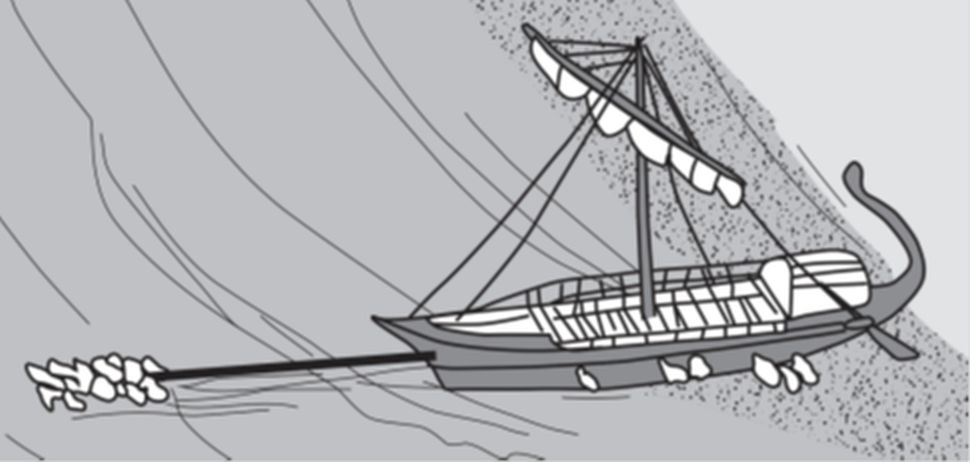
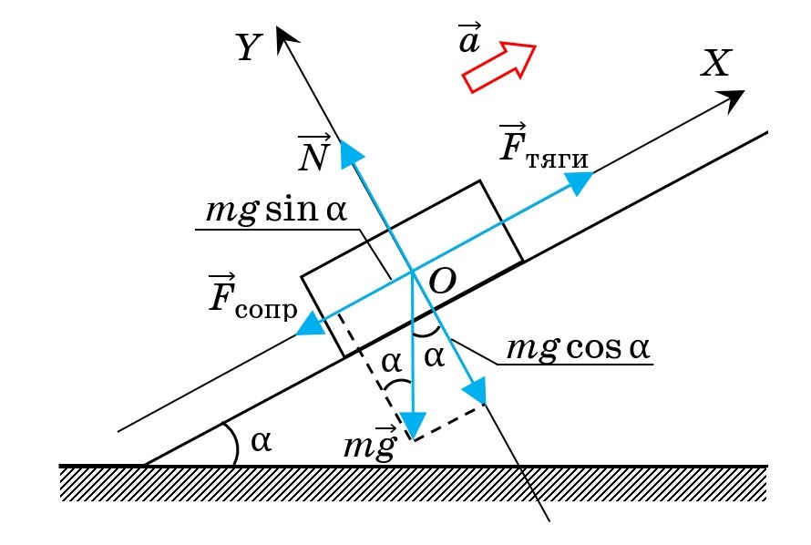
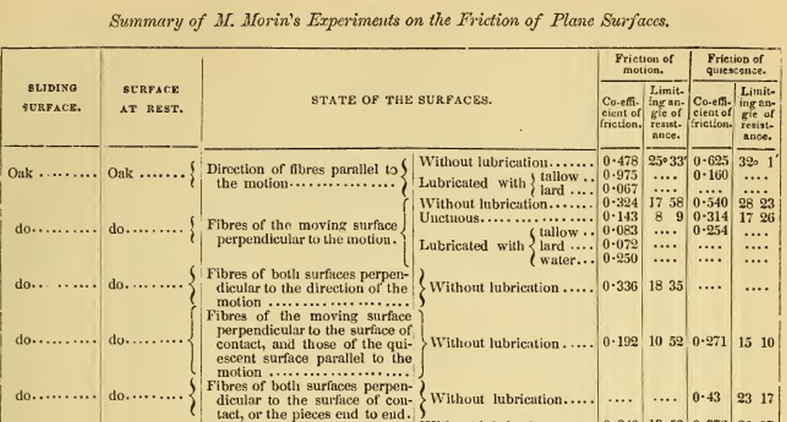

Тянем-потянем
Товарищ Борщина
даже орала,
фартуком
пот
оттирая с физии ―
«Без лифта
на 5-й этаж
пешкодралом
тащи
18 кило провизии!»
В. В. Маяковский. Важнейший совет домашней хозяйке
В предыдущих постах мы рассмотрели случаи, когда гребцы триеры (все или их часть) разгоняли веслами корабль, который с хода выскакивал на берег, или вытаскивали судно на своих руках, полностью или частично поднимая его в воздух. Сейчас рассмотрим еще один, не менее очевидный способ, при котором все гребцы тянут за специально заведенные тросы, разгоняют корабль и с разгона вытаскивают его на берег.

Ранее мы полагали, что при вытаскивании триеры на берег принимают участие все 200 ее гребцов. Но вот какую надпись обнаружили археологи в середине прошлого века в Афинах:
Невозможно вытащить [корабль], если имеется менее 40 человек, спустить его на воду силами менее 20 человек, осмолить или поднять его [для заведения тросовых обручей] силами менее 50 человек.
В этой надписи устанавливается минимум работников для выполнения трех указанных операций. Учитывая, что эта надпись обнаружена в районе крытых эллингов, в которых хранились только военные корабли, и только на военных кораблях заводили тросовые обручи для укрепления корпуса (см. например здесь), и что стандартным афинским военным кораблем той эпохи была триера, мы можем сделать заключение, что именно об этом типе кораблей идет речь в надписи.
Еще одно предварительное замечание необходимо сделать. Триеры в эллинги затаскивали не по голому грунту, а по настилу, слипу. Наклон его равнялся 1:10, или 5,71°. Ранее мы видели, что для вытаскивания триер на необорудованный берег также могли использоваться деревянные направляющие – фаланги, и что при крутых берегах моряки делали траншеи, чтобы уменьшить величину уклона до 1:10.
Известно, что человек, который за горизонтальный трос тянет груз, способен развивать силу, в полтора раза превышающую его вес. Т.е., при наших первоначальных допущениях, человек весом 70 кг способен развивать тягу 105 кг. Силами команды в 40 человек, о которой говорится в надписи, можно развить тягу 4200 кг. Далее следует простое рассмотрение механики движения тела по наклонной плоскости:

Сила трения равна произведению силы нормального давления на коэффициент трения
Fтр = kтр mg×cosα
Коэффициент трения скольжения дерева по песку – около 0,5.
Плюс мы должны добавить проекцию силы тяжести триеры на направление наклонной плоскости mg×sinα, которую также должны преодолеть тянущие корабль матросы
Fтяги = mg × (sinα + kтр×cosα)
При наших исходных данных получим
4200 = mg × (0,0995+0,5×0,995);
отсюда поднимаемый командой вес mg= 7035 кг, что явно меньше веса триеры. Следовательно, при вытаскивании триер надо было использовать наклонный слип из фаланг или катки. Коэффициент трения дерева по мокрому дереву равен 0,2-0,25. При этих исходных данных команда в 40 человек сможет вытащить на берег корабль весом до 14 тонн. Это уже ближе к весу порожней триеры. Если же в работе участвует не только специальная команда, а все 200 гребцов триеры, то они способны вытащить на берег порожнюю триеру весом до 70 тонн, что с лихвой перекрывает все допустимые размеры кораблей Древней Греции.
Впрочем, здесь не все так просто. Рассмотрим для примера часть таблицы коэффициентов трения для движения дуба по дубу в зависимости от направления волокон и применяемой смазки.

Источник: Appletons' cyclopaedia of applied mechanics, 1880-Vol.1, p.851
Анализ приведенных данных показывает, что неправильно подобранная смазка может привести лишь к незначительному уменьшению коэффициента трения. Опытные изыскания показали, что наилучшего эффекта можно достичь, применяя для смазки сосновый дёготь (pine tar). Проблему может доставить частичная растворимость дегтя в воде, что приводит к ухудшению его свойств при нанесении на мокрый корпус или слип.
Необходимо еще учитывать, что мы рассматривали коэффициент трения скольжения. Если триера покоится, то для выведения ее из состояния покоя, т.е. страгивания с места, необходимо приложить большее усилие: коэффициент трения покоя на 20-50% выше коэффициента трения скольжения. Поэтому, чтобы облегчить себе работу, гребцы отводили триеру метров на 15 от берега, затем разгоняли ее на тросовом буксире и, не останавливаясь, тянули до нужного места.
Некоторое улучшение антифрикционных свойств при вытаскивании триер на берег отмечается, когда поверхность, по которой движется корпус корабля, не деревянная, а представляет собой отполированный природный камень. Комбинируя его с соответствующими смазками коэффициент трения можно уменьшить вплоть до 0,065-0,08. А это уже гарантирует подъем триеры весом до 36 тонн даже силами команды в 40 человек.
Продолжение последует.